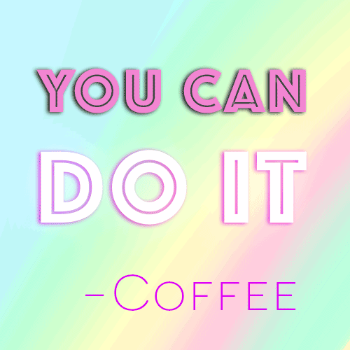

Monica Aguiñaga
Digital Artist & Professional-ish GIF Maker
About me
Hey there. I'm a self-declared digital artist who uses technology as my medium. Photoshop, HTML, CSS and the browser are my favorite tools to dream, create, and execute my ideas. With a background in design, photography and programming, I think of solutions to beautify the Internet. My passion lies in designing and building friendly and attractive interfaces that make people happy. Minimal graphic design makes me smile. Beautifully set typography makes me weak in the knees. Clean code excites me. Let's make cool shit together. I'm all for collaborations. Read more